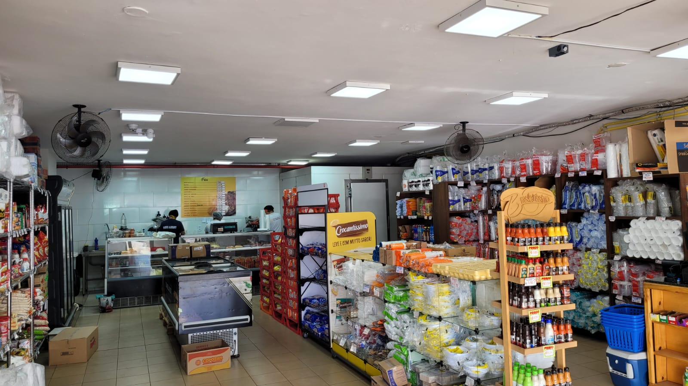

Na "Estação dos Frios", mergulhe em um mundo de sabores requintados e tradição artesanal. Somos uma loja dedicada a trazer a você os melhores queijos e frios de alta qualidade, cuidadosamente selecionados para satisfazer os paladares mais exigentes. Imagine-se explorando nossas prateleiras, repletas de uma variedade incrível de queijos de diferentes regiões do mundo. Desde os suaves e cremosos queijos franceses, aos ousados e picantes queijos italianos, passando pelos intensos queijos suíços, temos opções para todos os gostos. Nossos especialistas estão prontos para ajudá-lo a descobrir novos sabores e combinações, proporcionando uma experiência única a cada visita. Além dos queijos, nossos frios são um verdadeiro deleite para os amantes da boa comida. Prosciutto, salame, copa, mortadela... Nossa seleção de frios é de dar água na boca! Cada fatia é um convite para saborear o melhor da charcutaria, com produtos cuidadosamente curados e preparados para garantir a máxima qualidade. Na "Estação dos Frios", acreditamos que cada mordida deve ser uma experiência memorável. Por isso, nos dedicamos a oferecer produtos frescos e de primeira linha, vindos diretamente dos produtores mais renomados. Nossa paixão pela qualidade se reflete em cada produto que colocamos à sua disposição. Além disso, entendemos que a combinação perfeita de queijos e frios pode transformar um simples lanche em uma refeição sofisticada. Por isso, nossa equipe está pronta para compartilhar dicas e sugestões de harmonização, ajudando você a criar pratos incríveis para impressionar seus convidados ou simplesmente saborear momentos de prazer pessoal. Visite a "Estação dos Frios" e permita que nossos produtos despertem seus sentidos. Explore a vasta variedade de sabores, experimente novas combinações e descubra uma experiência gastronômica inesquecível. Deleite-se com o melhor queijo e os mais deliciosos frios na "Estação dos Frios" - onde a tradição encontra a excelência. Estamos ansiosos para recebê-lo e compartilhar com você o melhor do mundo dos queijos e frios.
Clique aqui e veja nossos produtos!
